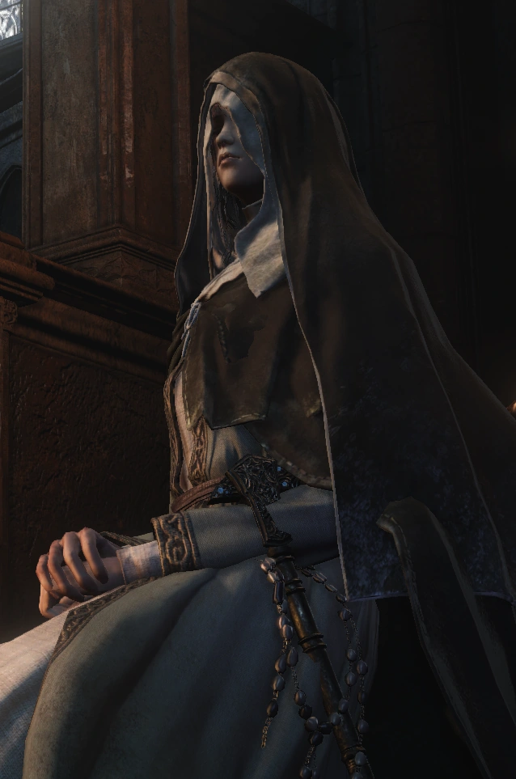

← Volver
← Volver
La Hermana Friede es un NPC en Dark Souls III, ubicada en el Mundo Pintado de Ariandel. Fue agregada al juego con el DLC Cenizas de Ariandel.
¿Dónde se puede encontrar a la Hermana Friede (NPC) en Dark Souls III? Puedes encontrar a la Hermana Friede en el Mundo Pintado de Ariandel, dentro de la capilla a la que se llega cruzando el puente de cuerda.
Diálogo del primer encuentro
""Bienvenidos al mundo pintado de Ariandel. Soy Friede. He estado mucho tiempo junto a nuestro bendito Padre y al resto de los Desamparados. Pero tú no pareces desamparado."
"Señor de los Huecos, desconozco los tropiezos que te condujeron a este mundo pintado. Pero tu deber es todo, y tu deber está en otra parte. Regresa de donde viniste."
"¿Supongo que lo ves? La hoguera aquí, en esta habitación. Algo débil y marchita, pero aún así te guiará."
Al entregarte el Anillo de Mordida Fría
"Ah, sí, hay algo que por derecho te corresponde poseer. Un recuerdo de este mundo frío, para el gran Señor de Londor. Que te ayude a cumplir con tu deber. (Te entrega el anillo de mordedura de frío). Ahora, regresa de donde viniste. Tienes un lugar en ese mundo, y eso solo es motivo de alegría."
Al abrir los accesos directos
"Sé prevenido, Ceniza impaciente, si este mundo se marchita y se pudre, incluso entonces Ariandel seguirá siendo nuestro hogar. Déjanos en paz, Ceniza. Borra todo pensamiento sobre nosotros de tu mente. Como siempre lo ha hecho tu especie."
[Si la misión de Yuria se completa] "Sé prevenido, Ceniza impaciente, si este mundo se marchita y se pudre, incluso entonces Ariandel seguirá siendo nuestro hogar. Déjanos en paz, Ceniza. Tú eres el Señor de Londor y tienes a tus propios súbditos a quienes guiar."
Al activar la pelea contra el jefe
"No te preocupes, padre, no necesitamos tu mayal. Es solo la llama, que vibra ante la ceniza descarriada. Por favor, aparta la mirada. Apagaré estas cenizas para siempre."
Durante la pelea contra el jefe
(Diálogo, primera fase, el jugador muere) "Regresa de donde viniste Porque ese es tu lugar de pertenencia."
(Primera fase, el jugador Señor de Londor muere) "Regresa de donde viniste Yuria seguramente te espera."
(Segunda y Tercera fase, el jugador muere) "Déjanos en paz, Ceniza. Aparta de tu mente cualquier pensamiento sobre nosotros. Como siempre lo han hecho los de tu especie."
(Segunda y Tercera fase, el jugador Señor de Londor muere) "Déjanos en paz, Ceniza. Tú eres el Señor de Londor y tienes a tus propios súbditos a quienes guiar."

 ↑
↑